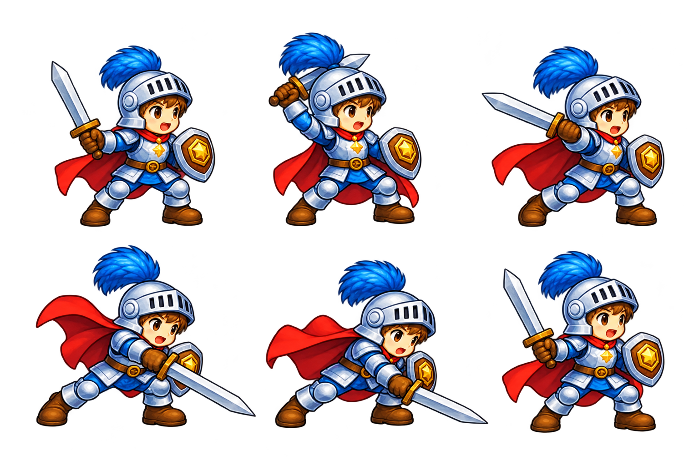
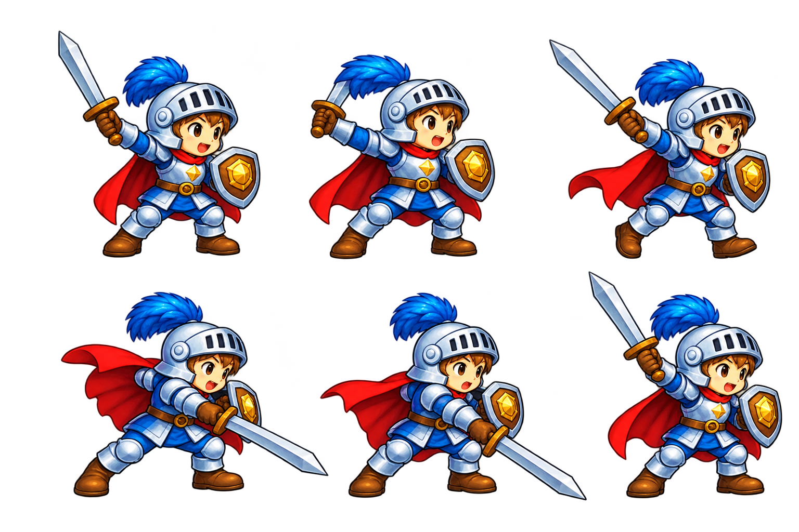

B · Etwas realistischerHüfte, Schulter und Arm drehen gemeinsam. Das Gewicht geht nach vorn.Alle sechs Bilder
C · Sehr realistisch bewegtAusholen, ein Schritt in den Schlag und ein kontrollierter Nachschwung.Alle sechs Bilder